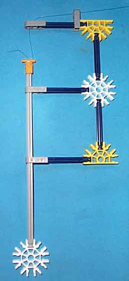

There is one actuator rod counterweight for each
A piece of monofiliment line is anchored to the top of the counterweight rod by an orange clip. The monofilament is threaded through the two gray (arity 1) connectors at the top of the assembly. A bowline is tied at the other end to form a loop which is looped around the white strut at the top of the corresponding actuator rod just below the gray pulley. 